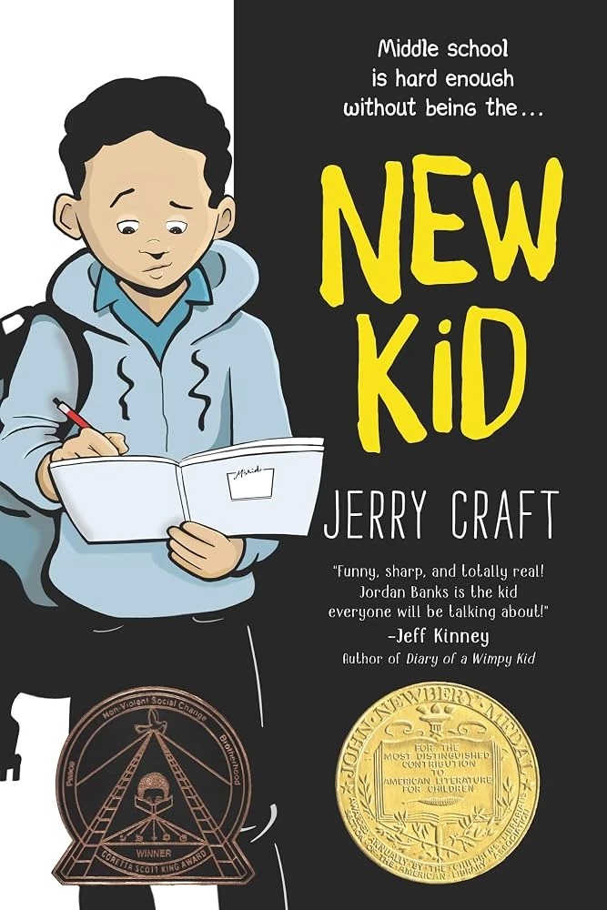
Grade 6New KidJerry Craft
Grade 6
New Kid
A graphic novel about belonging, identity, friendship, and navigating a new school environment.
Recommended collection
These recommendations are a planning sample, not a final required reading list. Families will receive advance notice of assigned course texts and accessible alternatives when appropriate.

Grade 6
A graphic novel about belonging, identity, friendship, and navigating a new school environment.
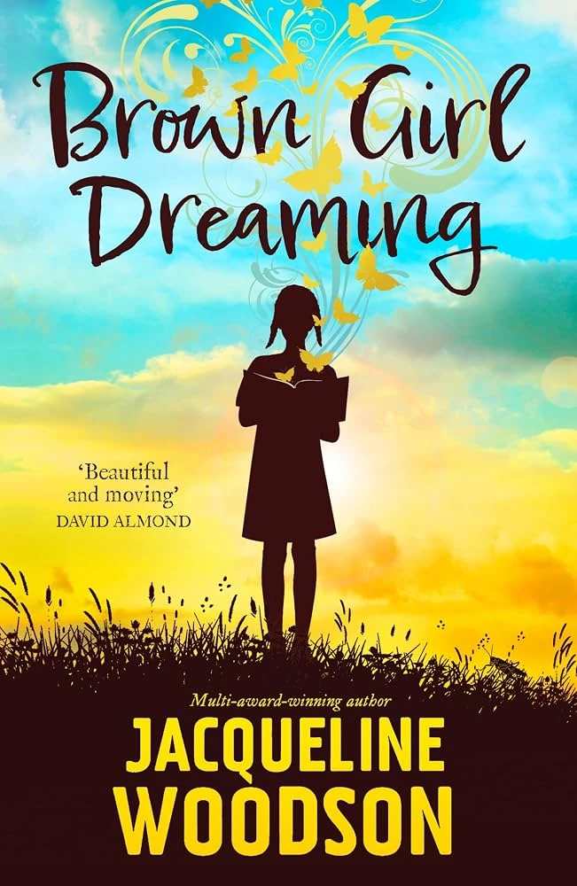
Grade 6
A memoir in verse about family, history, voice, and growing up between places.
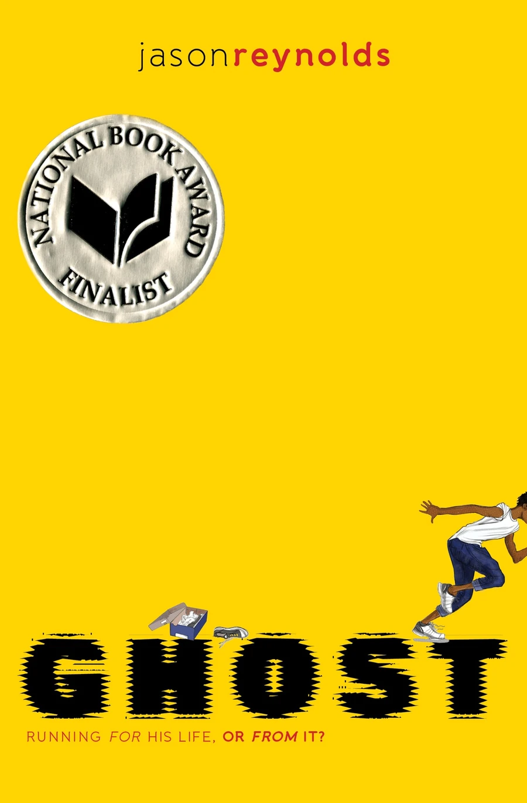
Grade 6
A fast-moving story about running, choices, resilience, and finding a team.
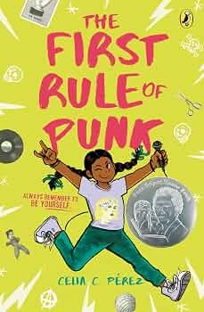
Grade 6
A creative story about music, heritage, self-expression, and building community.
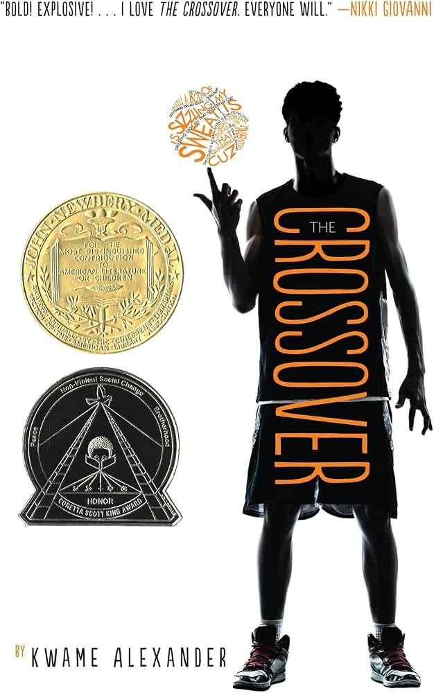
Grade 6
A novel in verse about basketball, brotherhood, family, and change.
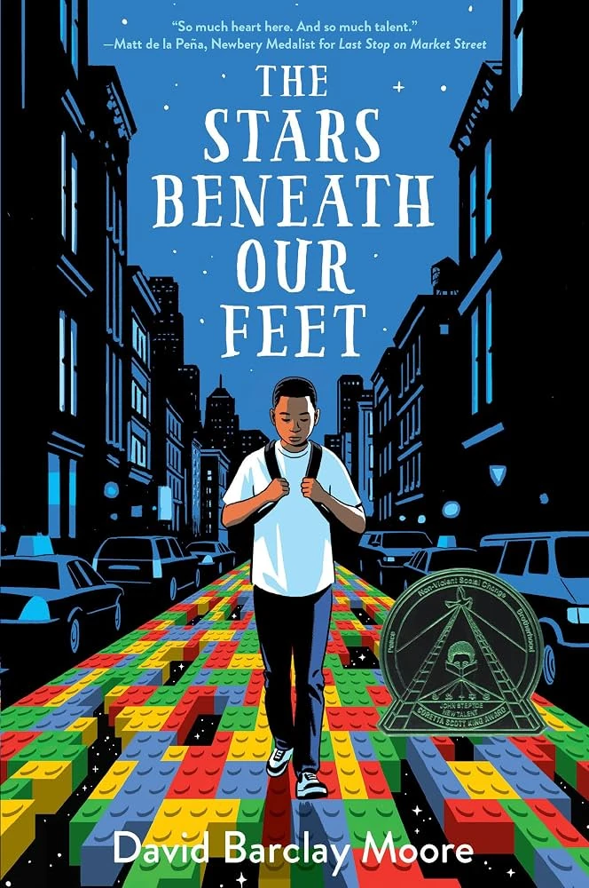
Grade 7
A Harlem-centered novel about grief, creativity, community, and finding a path forward.
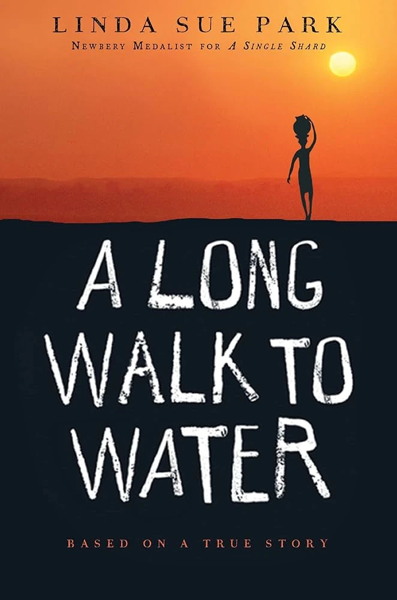
Grade 7
Two interwoven stories exploring survival, displacement, courage, and access to water.
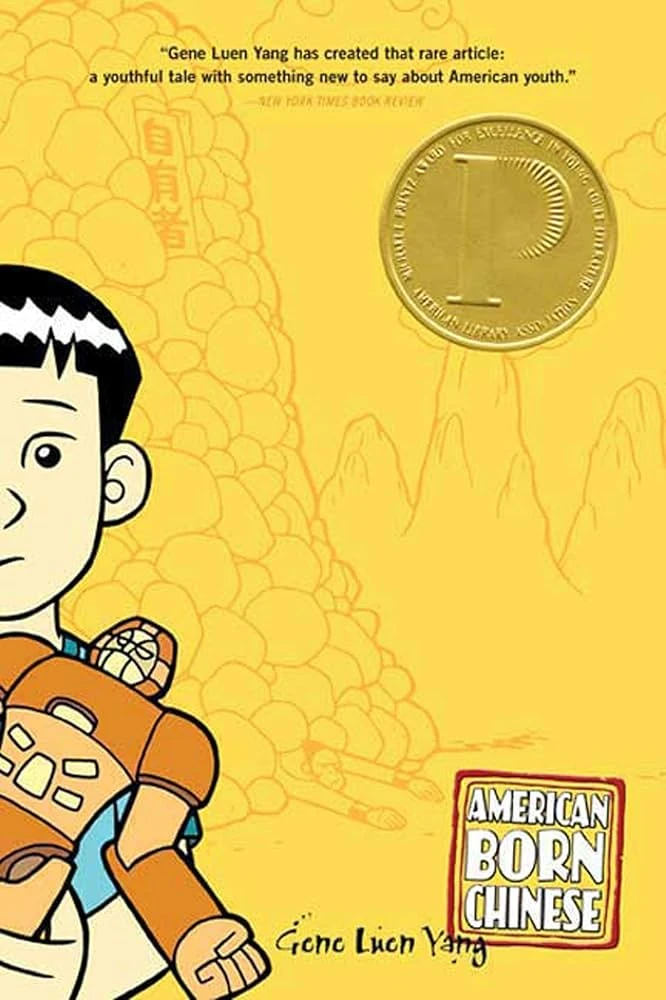
Grade 7
A graphic novel exploring identity, stereotypes, acceptance, and cultural belonging.
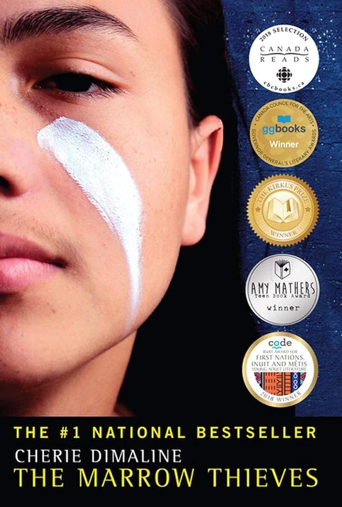
Grade 7
A speculative novel about Indigenous resistance, survival, memory, and community.
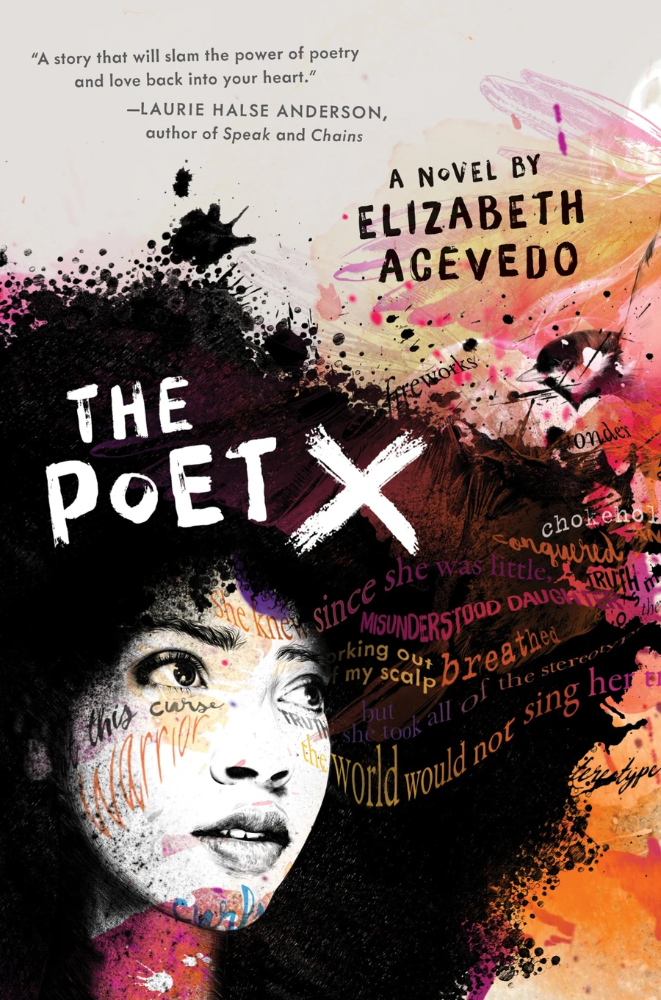
Grade 7
A novel in verse about voice, family expectations, faith, and the power of poetry.
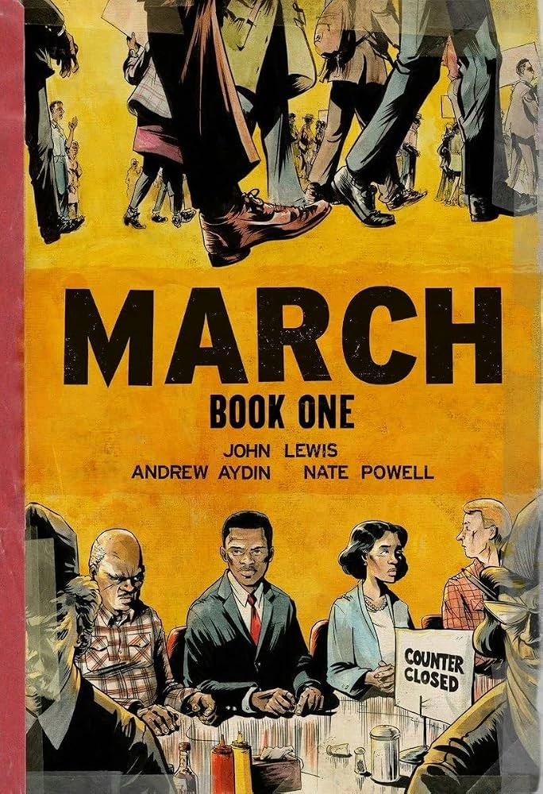
Grade 8
A graphic memoir introducing the civil rights movement through John Lewis’s lived experience.
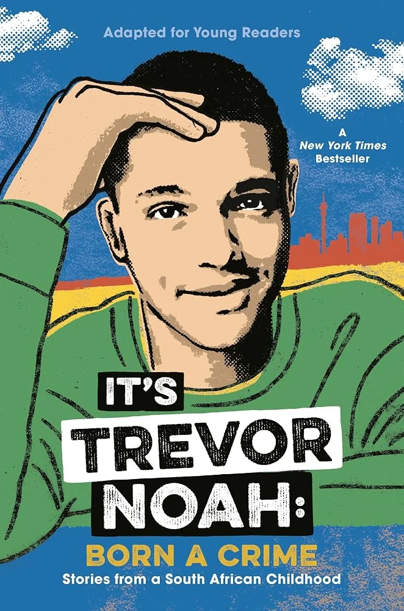
Grade 8
A memoir about growing up under apartheid, family, language, humor, and resilience.
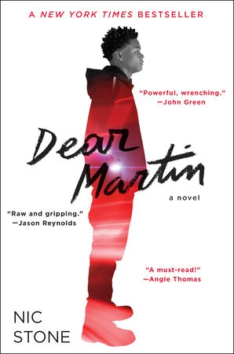
Grade 8
A contemporary novel about race, justice, identity, and civic responsibility.
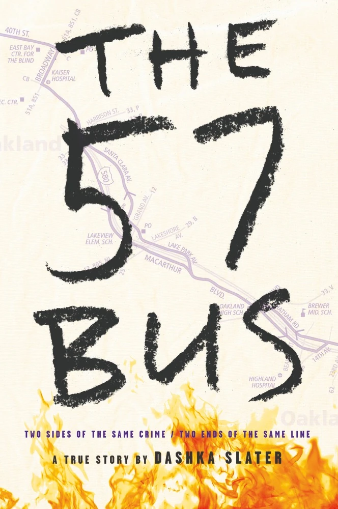
Grade 8
Narrative nonfiction examining identity, harm, accountability, and the justice system.
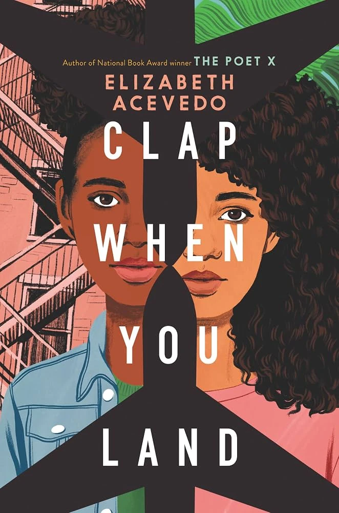
Grade 8
A dual-voice novel in verse about family, grief, secrets, and connection across countries.
Independent reading collections include contemporary fiction, classics, graphic novels, poetry, biography, nonfiction, and multilingual texts.
Students learn to use databases, reference materials, primary sources, archives, and digital media responsibly.
The library is envisioned as a family resource for books, workshops, media literacy, and community learning.
Teachers and specialists use diagnostics, conferencing, targeted intervention, and accessible formats to help every student grow.